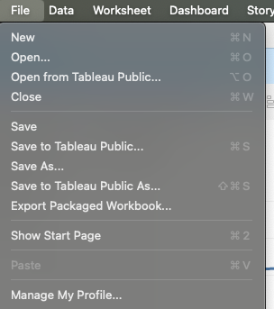

?teacher=1 בכתובת הדף: מה לומר, איפה לעצור ומה לבדוק לפני שממשיכים.יש לכם גרפים ודשבורד של Scoop & Go. במודול הזה הם הופכים לתוצר שאפשר לשלוח בקישור. בונים סיפור (Story) בן חמש נקודות: מה קרה ב-2025 ומה עושים. מכינים את החוברת לפרסום ובודקים שאין בה מה להסתיר. מפרסמים ל-Tableau Public, מסדרים פרופיל, ומטמיעים את הוויז בדף HTML פשוט. בסוף יש לכם קישור לסיפור שפורסם, דף שבו הוויז מוטמע, ורשימת בדיקה לכל פרסום עתידי.
מה צריך להיות מוכן: Tableau Public מותקן וחשבון Tableau Public פעיל (מודול 1), הקובץ scoop_sales_2024_2025.csv, ודשבורד אחד לפחות ממודול 13 (דשבורדים, פעולות ועיצוב). אין לכם דשבורד? בסעיף 3 יש מתכון קצר שבונה אחד. לחלק ההטמעה צריך עורך טקסט, ולהצגת הדף עדיף שרת קטן של פייתון או חשבון GitHub חינמי.
כל תרגיל כאן רץ ב-Tableau Public בלבד. הפרסום הוא ציבורי, ולכן בתרגילים מפרסמים רק את הנתונים הבדויים של Scoop & Go ואף קובץ אחר. כשמשהו עובד אחרת בעורך שבדפדפן (web authoring), נאמר את זה במקום.
סיפור או דשבורד: מה כל אחד עושה
מנהל הרשת של Scoop & Go שואל: ״מה קרה ב-2025, ומה עושים?״ אפשר לשלוח לו דשבורד עם גרפים ומסננים, והוא יחפש את התשובה לבד. אפשר גם לשלוח סיפור: חמישה מסכים, בכל אחד גרף ומשפט שאומר מה לראות. נתחיל בהבדל בין השניים.
Story): סוג גיליון ב-Tableau שמסדר גיליונות ודשבורדים בסדר קבוע, ולכל שלב יש כיתוב. הצופה לוחץ ועובר משלב לשלב. דוגמה: חמישה מסכים על Scoop & Go, בכל אחד גרף ומשפט אחד.Story Point): שלב אחד בסיפור: גיליון או דשבורד אחד, עם כיתוב משלו. דוגמה: הנקודה השלישית מציגה רק את סניף באר שבע, עם הכיתוב ״ב-2025 המכירות בסניף ירדו ב-3,420.40״.בחוברת של Tableau יש שלושה סוגי גיליון. לפי התיעוד של Tableau Public, חוברת בנויה מגיליונות עבודה (worksheet), דשבורדים וסיפורים. כל סוג בנוי מהקודם:
גיליון עבודה
גרף אחד או טבלה אחת. כאן בונים את כל מה שלמדתם במודולים 3 עד 12.
דשבורד
כמה גיליונות על מסך אחד, עם מסננים ופעולות. הצופה מסתכל, לוחץ ובודק בעצמו.
סיפור
רצף של גיליונות ודשבורדים, מסך אחד בכל פעם, וכיתוב לכל מסך. הצופה מקבל את הסדר שאתם בחרתם.
עכשיו נראה סיפור בפעולה. זה הסיפור שתבנו בסעיף 3. שימו לב לשלושה חלקים: שורת הכותרות למעלה (הניווט, Navigator), הגרף באמצע, והכיתוב למטה. הצופה לא בוחר איזה גרף לפתוח, אלא לוחץ על הבא.
- נקודה 1: הפתיחה. הכותרת באה קודם: המכירות עלו ב-21.2%, מ-107,047.60 ל-129,773.30. הצופה יודע מיד מה הסיפור.
- נקודה 2: הסניפים. אותה שנה, אבל עכשיו רואים שלא כולם עלו. סניף אחד, באר שבע, ירד.
- נקודה 3: התמקדות. אותו גיליון, אבל מסננים רק את באר שבע. הכיתוב אומר מה רואים ומה לא ידוע.
- נקודה 4: בעיה שנייה. הנחה של 50% מפסידה כסף: 292 שורות מכירה, רווח של -378.00.
- נקודה 5: ההמלצה. ההפסד כולו במנות קינוח (Sundaes): -747.00, ואילו Cones ו-Cups עדיין מרוויחים. לכן ממליצים להוציא אותן מההנחה.
דשבורד עונה על שאלות שהצופה מביא איתו. סיפור עונה על שאלה אחת שאתם בחרתם, בסדר שבחרתם. לכן בדשבורד השאלה היא ״מה אפשר לבדוק כאן?״, ובסיפור היא ״מה אני רוצה שהצופה יבין, ובאיזה סדר?״.
מתי סיפור, ומתי דשבורד
| דשבורד | סיפור | |
|---|---|---|
| מי מנהל את הקריאה | הצופה: מסנן, לוחץ, בודק | אתם: הצופה מתקדם צעד אחר צעד |
| איזו שאלה | הרבה שאלות, שלא ידועות מראש | שאלה אחת, שהתשובה לה ידועה לכם |
| הכיתוב | כותרת וכמה הסברים קצרים | משפט לכל נקודה, שאומר מה לראות |
| מתאים ל | מעקב שוטף, ניתוח חופשי | הצגה למנהלים, תיק עבודות, הסבר של ממצא |
| מה קשה | להעמיס יותר מדי | לבחור מה לא להכניס |
שלוש בקשות: (א) מנהל הסניף בדרום רוצה לבדוק כל בוקר את המכירות של אתמול. (ב) המנהל הכללי רוצה לספר לדירקטוריון מה קרה ב-2025. (ג) אתם מכינים פריט בתיק העבודות שלכם. מה מתאים לכל אחת: דשבורד או סיפור?
מה סיפור לא יודע לעשות. לפי התיעוד של Tableau, יש דברים שלא נתמכים בסיפור: אזורים בדשבורד שמופיעים ונעלמים לפי ערך (Dynamic Zone Visibility), כותרות וטווחי צירים שמשתנים דינמית, ופעולות מסוג Set Action. אם הדשבורד שלכם מתבסס על אחד מהם, הוא לא יעבוד כמו שצריך בתוך סיפור. סיפורים כן מתפרסמים ל-Tableau Public, והצופה יכול לעבור בהם בין הנקודות.
״סיפור הוא דשבורד גדול יותר.״ ממלאים כל נקודה בשלושה גרפים וחמש הערות, וכל נקודה הופכת לדשבורד בפני עצמו. הצופה לא יודע איפה להסתכל. הכלל: נקודה אחת, מסר אחד. אם יש לכם שני מסרים, אלה שתי נקודות. Tableau עצמה ממליצה להימנע ממספר גדול של נקודות ולהסיר כיתובים ומקראות שאינם נחוצים.
כל גיליון הופך לנקודה. בניתם עשרה גיליונות, ולכן הסיפור בן עשר נקודות. אבל סיפור הוא לא ארכיון. בוחרים רק מה שמקדם את המסר, והשאר נשאר בדשבורד או בחוברת.
Tableau כותבת בהנחיות שלה לסיפורים: לקבוע קודם מטרה ואת הדרך שהקורא יעבור, לשרטט על נייר לפני שבונים, ולפתוח במסקנה כשהקהל עסוק. אלה אותם כללים שעובדים בכתבה בעיתון: הכותרת קודם, הפרטים אחר כך.
מהי נקודת סיפור (Story Point)?
מי מכתיב את סדר הקריאה בסיפור, ומי בדשבורד?
Story > New Story או שיש רק לשונית New Story בתחתית המסך, וגם אם הניווט נקרא Navigator בשורת הנקודות.איך מסדרים סיפור: סדר, כיתובים ויושר
יש לכם גרפים טובים ועדיין אין סיפור. סיפור נבנה מהסדר: מה הצופה רואה קודם, מה אחר כך, ומה כתוב מתחת לכל גרף. נעבור על שלוש החלטות: מה הסדר, איך כותבים כיתוב, ומה לא מכניסים.
הנה התפקידים, לפי הסיפור שתבנו בסעיף הבא:
| נקודה | התפקיד שלה | ב-Scoop & Go |
|---|---|---|
| 1. פתיחה | המסקנה בשורה אחת, והקשר מינימלי | 2025 עלתה ב-21.2%, והקיץ נושא אותה |
| 2. בעיה | איפה זה לא עובד | באר שבע ירד, ושאר הסניפים עלו |
| 3. התמקדות | מקרבים את הבעיה, בלי להמציא סיבה | באר שבע לבדו: מ-11,108.80 ל-7,688.40 |
| 4. ממצא שני | עוד דבר שדורש תשומת לב | ההנחה של 50% מפסידה |
| 5. המלצה | מה עושים עכשיו | להוציא את הקינוחים מההנחה |
- פתיחה. הצופה מקבל את המסקנה בשורה אחת. אם הוא עוצר כאן, הוא כבר יודע את העיקר.
- בעיה. הצופה רואה שלא הכול טוב, ושיש משהו לבדוק.
- התמקדות. אותו גיליון, מקרוב: איזה סניף ומתי. זו הנקודה שהכיתוב בה זהיר במיוחד.
- ממצא שני. עוד דבר מהנתונים, כדי שההמלצה תהיה מבוססת על יותר מדבר אחד.
- המלצה. הסיפור נגמר במה עושים. בלי זה, הצופה יודע מה קרה ולא מה לעשות.
הכיתוב: משפט, לא שם של גרף
הכיתוב (caption) הוא המשפט שמופיע מעל הגרף בנקודה. הוא הדבר הראשון שהצופה קורא. כיתוב טוב אומר מה לראות, כולל מספר. כיתוב חלש אומר רק איזה גרף זה.
| כיתוב חלש (שם הגרף) | כיתוב חזק (המסקנה) |
|---|---|
| מכירות לפי חודש | יולי ואוגוסט הם 34.7% ממכירות 2025 |
| מכירות לפי סניף ושנה | באר שבע ירד ב-30.8%, ושאר הסניפים שפעלו בשתי השנים עלו |
| רווח לפי רמת הנחה | הנחה של 50% מפסידה 378.00 על 292 שורות מכירה |
בדיקת הקריאה: קראו רק את חמשת הכיתובים, בלי הגרפים. אם הסיפור מובן, הסדר נכון. אם חסר חלק, חסרה נקודה. אם שני כיתובים אומרים אותו דבר, אחת הנקודות מיותרת.
כותרת שנכונה ומטעה. ״המכירות עלו ב-21.2%״ נכון: 107,047.60 ב-2024 ו-129,773.30 ב-2025. אבל 15,229.70 מתוך 2025 הגיעו משני סניפים שנפתחו באותה שנה (Rehovot Mall ו-Ashdod Beach Pop-up). שבעת הסניפים שפעלו בשתי השנים עלו מ-107,047.60 ל-114,543.60, כלומר ב-7.0%. צופה שרואה רק את 21.2% חושב שהסניפים הקיימים צמחו בערך פי שלושה ממה שקרה להם בפועל. מה עושים: כותבים את שני המספרים, או מוסיפים משפט שמסביר את ההבדל.
״הנתונים מסבירים למה.״ באר שבע ירד, ורואים בגרף שהירידה התרכזה מיוני 2025 עד סוף השנה. אבל הקובץ לא יודע אם הסיבה היא סניף חדש בסביבה, שיפוץ, או עובד שעזב. הוא מראה איפה ומתי, לא למה. מה עושים: בכיתוב כותבים מה רואים. סיבה כותבים רק אם יש לה ראיה, ואחרת מציינים שהיא לא ידועה.
הסדרה בעצמכם: בונה סיפורים
לפניכם תשעה קלפים. שישה מהם שייכים לסיפור של Scoop & Go, ושלושה לא. המספרים בקלפים מחושבים עכשיו מהקובץ עצמו. בחרו קלפים, סדרו אותם, ולחצו ״בדיקה״. הבדיקה בודקת את הכללים של הסעיף: מסקנה פותחת, בעיה לפני התמקדות בה, ממצא לפני המלצה, והמלצה בסוף.
קלפים זמינים
הסיפור שלכם (לפי הסדר)
המנהל אומר: ״תכתבו בכותרת רק 21.2%, זה נשמע טוב יותר.״ מה עונים, בלי להתווכח?
בנקודה 3 כתוב רק מה קרה בבאר שבע. המנהל שואל: ״למה זה קרה?״ מה הייתם בודקים כדי להסביר, ומה מהם יש בקובץ?
עיתונאים קוראים לזה ״הפירמידה ההפוכה״: הכי חשוב בפתיחה, והפרטים בהמשך, כדי שמי שעוצר באמצע כבר קיבל את העיקר. בסיפורי נתונים זה אותו עיקרון, ובגלל זה הנקודה הראשונה היא המסקנה ולא הגרף הכי יפה.
איזה כיתוב מתאים יותר לנקודת סיפור?
איזה סדר נכון לסיפור על ההנחה של 50%?
״המכירות עלו ב-21.2%״ נכון. מה חסר כדי שהכותרת תהיה גם הוגנת?
בונים סיפור בן חמש נקודות מ-Scoop & Go
עכשיו בונים. חמישה גיליונות, דשבורד אחד, ומהם סיפור. בכל גיליון יש מספרי בדיקה, כדי שתדעו בדיוק שהגרף שלכם נכון לפני שמניחים אותו בסיפור.
מה בונים, בקצרה
כל נקודה בסיפור נשענת על גיליון. הנה התוכנית, והמספרים שאמורים להופיע בכל גיליון. המספרים חושבו מהקובץ scoop_sales_2024_2025.csv בפייתון. Tableau עשוי להציג אותם מעוגלים (למשל 107,048 במקום 107,047.60), תלוי בפורמט המספרים. הסכום המדויק מופיע בטולטיפ.
| שם הגיליון | מה על המדפים | סימנים | מספרי בדיקה |
|---|---|---|---|
| 1 Year | YEAR(Order Date) ב-Columns, Sales ב-Rows | 2 | 107,047.60 ו-129,773.30 |
| 2 Monthly | MONTH(Order Date) (רציף) ב-Columns, Sales ב-Rows | 24 | שיא באוגוסט 2025: 23,259.90. שפל בפברואר 2025: 4,097.00 |
| 3 Branches | Branch ב-Rows, YEAR(Order Date) ואז Sales ב-Columns | 16 | באר שבע: 11,108.80 ב-2024, 7,688.40 ב-2025 |
| 4 Discount | Discount (כממד) ב-Columns, Profit ב-Rows | 4 | 113,367.00, 6,902.60, 831.30, -378.00 |
| 5 Sundaes | Category ב-Columns, Profit ב-Rows, מסנן על Discount = 0.5 | 3 | Cones 170.00, Cups 199.00, Sundaes -747.00 |
לפני שבונים בתוכנה, שני גיליונות להרגשה ב״מיני Tableau״ שבדף. זו הדמיה, לא התוכנה עצמה, אבל הצורה והמספרים אמיתיים. בנו את גרף הקווים של המכירות לפי חודש.
ועכשיו רמת ההנחה. ב-Tableau הנחה היא מספר, ולכן היא מתחילה כמדד. הפכו אותה לממד (בתפריט של ה-pill בחרו Dimension), ושימו אותה ב-Columns, והרווח ב-Rows.
תרגיל: בונים את חמשת הגיליונות
טענו את scoop_sales_2024_2025.csv ב-Tableau Public (אם אין לכם טעינה פתוחה, ראו מודול 2). בכל גיליון בדקו את מספרי הבדיקה מהטבלה למעלה, ושנו את שם הגיליון בלחיצה כפולה על הלשונית.
- גיליון 1 Year: גררו את
Order DateאלColumnsואתSalesאלRows. למה: Tableau מציג תאריך כשנה כשגוררים אותו למדף, והמכירות מסתכמות לכל שנה. - גיליון 2 Monthly: גליון חדש. גררו
Order DateאלColumns, לחצו על ה-pill שלו ובחרו את ה-Monthהשני ברשימה (זה שמציג תאריך מלא, כמו August 2025), שנהפך לירוק. גררוSalesאלRows. למה: חודש רציף נותן ציר זמן אמיתי, בלי לאחד את אותו חודש משתי השנים. - גיליון 3 Branches: גררו
BranchאלRows. גררוOrder DateאלColumns(יוצג כשנה), ואזSalesאלColumns, מימין לשנה. למה: כל סניף מקבל שורה, ולכל שנה יש עמודה נפרדת, כך שאפשר להשוות 2024 ל-2025. - גיליון 4 Discount: בחלונית הנתונים לחצו ימנית על
DiscountובחרוConvert to Dimension. גררו אותו אלColumnsואתProfitאלRows. למה: אנחנו רוצים עמודה לכל רמת הנחה, לא סכום של אחוזי הנחה. - גיליון 5 Sundaes: גליון חדש. גררו
CategoryאלColumnsואתProfitאלRows. גררו אתDiscountאלFiltersובחרו רק 0.5. למה: אנחנו מסתכלים רק על המכירות עם הנחה של 50%. - בגיליון 4, גררו את שדה הספירה
scoop_sales_2024_2025.csv (Count)(בסוף רשימת המדדים; בגרסאות אחרות הוא נקראNumber of Records) אלLabel. למה: כך רואים כמה שורות מכירה יש בכל רמת הנחה, ובודקים את המספר שבכיתוב של נקודה 4.
תוצאה צפויה: בגיליון 1 שני סימנים, 2024 ו-2025. בגיליון 2 עשרים וארבעה סימנים, והשיא באוגוסט 2025. בגיליון 3 שישה עשר סימנים: שבעה סניפים בשתי שנים ועוד שני סניפים שיש להם רק 2025 (Ashdod Beach Pop-up ו-Rehovot Mall). בגיליון 4 ארבעה סימנים, והאחרון (0.5) מתחת לאפס, עם 292 שורות מכירה. בגיליון 5 שלושה סימנים, ו-Sundaes הוא הסימן השלילי: -747.00. אם המספרים אצלכם שונים, בדקו קודם איזה מסנן פעיל ואיזו שנה מוצגת.
מצפים ל-14 סימנים ורואים 16. שבעה סניפים כפול שתי שנים נותנים 14, אבל יש תשעה סניפים: שניים נפתחו ב-2025, ולכל אחד מהם סימן אחד. אין כאן תקלה, וזה הפרט שכדאי לציין בכיתוב (ראו הכותרת המטעה בסעיף 2).
הדשבורד של הנקודה הראשונה
הנקודה הראשונה בסיפור היא דשבורד. אם בניתם דשבורד של Scoop & Go במודול 13, אפשר להשתמש בו. אם לא, הנה דשבורד קטן שמספיק לסיפור.
תרגיל: דשבורד Overview משני גיליונות
- בתפריט
DashboardבחרוNew Dashboard. למה: זה המסך שבו מסדרים כמה גיליונות יחד. - גררו את 1 Year אל הקנבס, ואחר כך את 2 Monthly מתחתיו. למה: למעלה המסקנה (שנה מול שנה), ולמטה הקיץ שנושא אותה.
- שנו את שם הלשונית ל-Overview. בתפריט
DashboardהפעילוShow Title, ולחצו כפול על הכותרת כדי לכתוב Scoop and Go 2025. למה: שם קצר באנגלית נכנס לכתובת הקישור ולא מתקלקל. - בתחתית הלוח השמאלי, בתפריט
Sizeשל הדשבורד, בחרו גודל שמתאים לסיפור (אותו גודל שתבחרו לסיפור, בשלב הבא). למה: דשבורד בגודל שונה מהסיפור יוצג בחיתוך או עם מקום ריק.
תוצאה צפויה: דשבורד אחד בשם Overview עם שני גיליונות: עמודות של שתי שנים ומתחתיהן קו של 24 חודשים. אם יש לכם דשבורד אחר ממודול 13, הוא יכול לשמש את הנקודה הראשונה, אבל מספרי הבדיקה של הכיתוב שלה (21.2%) הם של הגיליונות האלה.
הסיפור עצמו
עכשיו פותחים סיפור. הצילום והאיורים של המסך נראים כך (הדמיה סכמטית):
Story
Dashboards
Sheets
- הלוח השמאלי: רשימת הדשבורדים והגיליונות. גוררים משם לתוך הנקודה, וגם בוחרים את
Sizeשל הסיפור. - הניווט: תיבה לכל נקודה, עם הכיתוב שלה. לוחצים על תיבה כדי לעבור אליה.
- הקנבס: הגיליון או הדשבורד של הנקודה הנוכחית.
- הכפתורים של נקודות חדשות:
Blank(נקודה ריקה),Duplicate(העתק של הנקודה) ו-Update(שמירת שינוי בנקודה הנוכחית).
תרגיל: נקודות 1 ו-2 של הסיפור
- בתפריט
StoryבחרוNew Story(או לחצו על סמל הסיפור החדש בשורת הלשוניות בתחתית). למה: נפתח גיליון מסוג סיפור, וכל החוברת נשארת כמו שהיא. - בלוח השמאלי, ליד
Size, בחרו גודל קבוע, למשל 1000 x 800 (או הקרוב לו ברשימה). למה: הגודל שבוחרים כאן הוא הגודל שהצופה יראה, לא הגודל של המסך שלכם. - הפעילו את הכותרת של הסיפור (
Story > Show Title) וכתבו: Scoop and Go: what happened in 2025. למה: כותרת קצרה שאומרת על מה הסיפור. - גררו את Overview מהלוח השמאלי אל הקנבס. למה: זו נקודה 1.
- לחצו על
Add a captionבתיבת הניווט וכתבו: המכירות עלו ב-21.2%, מ-107,047.60 ל-129,773.30. שני סניפים חדשים הוסיפו 15,229.70. הקיץ נושא את השנה. למה: זה משפט שאומר את המסקנה, כולל ההקשר. - לחצו
Blankכדי להוסיף נקודה חדשה, וגררו אליה את 3 Branches. כיתוב: שבעת הסניפים שפעלו בשתי השנים עלו ב-7.0%. באר שבע ירד ב-30.8%. למה: בנקודה 2 רואים את הבעיה.
תוצאה צפויה: בניווט שתי תיבות. נקודה 1 מראה שתי עמודות של שנים וקו חודשי, נקודה 2 מראה תשעה סניפים בשתי עמודות שנה. הכיתובים: 21.2% לפתיחה, 7.0% ו-30.8% לנקודה 2. כל מספר בכיתוב נבדק מול הגיליון.
נקודה 3 היא אותו גיליון הסניפים, אבל מסוננת רק לבאר שבע. את זה לא בונים בגיליון חדש. משתמשים בשני כפתורים של הסיפור: Duplicate ו-Update. הנה איך זה עובד.
- נקודה 2 מציגה את כל הסניפים. בצד יש כרטיס מסנן (
Branch) שבו כל הסניפים מסומנים. - לוחצים
Duplicate. נוצרת נקודה 3, זהה לנקודה 2. עדיין אין הבדל בין השתיים. - בנקודה 3 מבטלים את הסימון של כל הסניפים חוץ מבאר שבע. הגרף מתכווץ לשתי עמודות, וכפתור
Updateנדלק. השינוי עוד לא נשמר. - לוחצים
Update. המצב החדש נשמר בנקודה 3, ונקודה 2 נשארת עם כל הסניפים.
תרגיל: נקודות 3, 4 ו-5 של הסיפור
- בגיליון 3 Branches גררו את
BranchאלFilters(השאירו את כולם מסומנים), ולחצו ימנית על ה-pill של המסנן ובחרוShow Filter. למה: כך יש כרטיס מסנן שאפשר לשנות בתוך הסיפור. - חזרו לסיפור, לנקודה 2, ולחצו
Duplicate. למה: עותק של הנקודה הוא נקודת התחלה לנקודה 3. - בנקודה החדשה בכרטיס המסנן בחרו
Noneואז סמנו רק Beer Sheva Grand Mall. לחצוUpdate. למה: בלי Update השינוי לא נשמר בנקודה. - כיתוב לנקודה 3: באר שבע: 11,108.80 ב-2024 ו-7,688.40 ב-2025, ירידה של 3,420.40. הנתונים מראים איפה ירד, לא למה.
Blank, וגררו את 4 Discount. כיתוב: הנחה של 50% מפסידה 378.00 על 292 שורות מכירה.Blank, וגררו את 5 Sundaes. כיתוב: ההפסד כולו במנות קינוח: -747.00. ממליצים להוציא אותן מההנחה של 50%.- לחצו על כל חמש התיבות בניווט, אחת אחת, וקראו את הכיתובים. למה: זו בדיקת הקריאה מהסעיף הקודם.
תוצאה צפויה: חמש תיבות בניווט. נקודה 3 מציגה שני סימנים בלבד: 11,108.80 ו-7,688.40, והפרש של 3,420.40. נקודה 2 עדיין מציגה את כל הסניפים. נקודה 4 מציגה ארבע עמודות, ומעל 0.5 אפשר לראות 292 אם הוספתם תווית. נקודה 5: Cones 170.00, Cups 199.00, Sundaes -747.00.
אם כרטיס המסנן מפריע לכם. הכרטיס יופיע גם בנקודה 2, כי הוא חלק מהגיליון. חלופה: בנו גיליון נפרד בשם 3b Beer Sheva עם מסנן על הסניף (בלי להציג כרטיס), והניחו אותו בנקודה 3 במקום להשתמש ב-Update. התוצאה דומה, והיתרון הוא שאין כרטיס על המסך. החיסרון: צריך עוד גיליון לתחזוקה.
למה Duplicate ולא גיליון חדש? כשמשכפלים נקודה, הגיליון נשאר אחד, ורק המצב שלו (המסנן, המיון, הבחירה) שונה בין הנקודות. אם תתקנו אחר כך את הגיליון עצמו, למשל צבע או כותרת, התיקון יופיע בכל נקודה שמשתמשת בו. לפי התיעוד, נקודות נשארות מקושרות לגיליון המקורי.
גימור: ניווט, כותרת והצגה
- סגנון הניווט. אפשר להציג את הניווט כתיבות עם כיתוב, כמספרים או כנקודות, ולהוסיף חיצים. מחפשים את זה בלשונית
Layoutבלוח השמאלי, או ב-Format > Story. בגרסה שלכם השמות עשויים להיות מעט שונים. - עיצוב הכיתובים. כיתוב קצר מתחת לגרף עדיף על פסקה. אם הכיתוב נחתך, הגדילו את תיבת הכיתוב או קצרו אותו.
- מצב הצגה. ב-Desktop יש
Presentation Modeשמסתיר את הכלים ומראה רק את הסיפור, לשימוש כשמציגים בכיתה או בפגישה. - דשבורד בתוך סיפור. אם הדשבורד נחתך בנקודה 1, חזרו אליו וודאו שהגודל שלו מתאים לגודל הסיפור.
שינוי בלי Update. שיניתם מסנן בנקודה 3, עברתם לנקודה אחרת וחזרתם, והמסנן חזר לקדמותו. הסיבה: שינוי במצב של נקודה לא נשמר עד שלוחצים Update. מה עושים: אחרי כל שינוי, מחפשים את הכפתור Update ולוחצים עליו, ואחר כך עוברים נקודה.
גודל הסיפור לא תואם את הצופה. בניתם את הסיפור על מסך גדול, והוא נפתח אצל הצופה קטן או חתוך. הגודל שבוחרים ב-Size הוא הגודל שהצופה יראה, ולכן בוחרים גודל קבוע סביר ובודקים אותו בקישור המפורסם, לא רק במחשב שלכם.
כיתוב שהוא פסקה. בנקודה יש מקום לשורה או שתיים. כיתוב ארוך נחתך, ובעיקר: אף אחד לא קורא אותו. אם צריך להסביר הרבה, מוסיפים נקודה או מעבירים את ההסבר לפתק מקור בסוף (סעיף 10).
אנליסטים מציגים סיפורים לפני הנהלה בצורה הזאת: מצב הצגה על מסך אחד, ונקודה אחרי נקודה. אבל הרבה פעמים מי שמחליט מקבל גם את הקישור לגרסה המקוונת, כדי לבדוק בעצמו אחר כך. בגלל זה הכיתובים חייבים להבין גם בלי מישהו שמסביר.
סיפור בעורך שבדפדפן (web authoring). לא ידוע לנו בוודאות שהעורך שבאתר Tableau Public (Create) תומך ביצירת סיפור, ובדף של התיעוד על ההבדלים בין העורך לבין Desktop אין התייחסות ל-Public. בדקו אצלכם אם יש לשונית סיפור חדש. אם אין, אפשר לבנות את הסיפור ב-Desktop ולפרסם משם. אפשרות נוספת, שבה לא צריך סיפור כלל: לפרסם חמישה דשבורדים או גיליונות, ולהטמיע אותם בדף אחד לפי הסדר, כל אחד עם כותרת משלו (בסעיף 8 נלמד להטמיע).
שיניתם את הצבע בגיליון 3 Branches. בנקודה 2 השינוי נראה, אבל בנקודה 3 לא. מה הכי סביר שקרה, ומה בודקים?
Update.שיניתם מסנן בתוך נקודה של סיפור. מה צריך לעשות כדי שהשינוי יישמר בנקודה?
Update שומר את המצב הנוכחי (מסנן, מיון, בחירה) בנקודה. שמירת החוברת שומרת את הקובץ, אבל לא את השינוי בנקודה שלא עודכנה. גיליון חדש הוא חלופה, לא חובה.בגיליון 3 יש שישה עשר סימנים. מדוע לא ארבעה עשר (שבעה סניפים כפול שנתיים)?
מה ההבדל בין Blank לבין Duplicate בהוספת נקודה לסיפור?
Story > New Story והתיבה Add a caption, (2) הכפתורים Blank, Duplicate ו-Update ב-Public (לפי התיעוד הרשמי הם קיימים בכל Desktop), (3) שהכרטיס של Branch נשאר מוצג בנקודה 2 וש-Update שומר רק את נקודה 3, (4) איך נקרא תפריט הגודל של דשבורד שנכנס לסיפור. אם הכרטיס מפריע, להשתמש בגיליון 3b. אין ראיה בנתונים לסיבת הירידה בבאר שבע, ולכן הכיתוב אומר רק איפה.מכינים את החוברת לפרסום
הסיפור עובד על המחשב שלכם. לפני שלוחצים על פרסום, עוברים על החוברת כמו זר שפותח אותה בפעם הראשונה: מה הוא יראה, ומה הוא יוכל להוריד. בסעיף הזה שלושה דברים: ניקוי, ביקורת נתונים ורשימת בדיקה.
Workbook): הקובץ ש-Tableau שומר, עם כל הגיליונות, הדשבורדים והסיפורים. כשמפרסמים ל-Tableau Public, מצורף אליו גם עותק של הנתונים (extract). דוגמה: החוברת של Scoop & Go כוללת חמישה גיליונות, דשבורד וסיפור, ובתוכה עותק של כל 6,575 השורות.הנקודה החשובה: הנתונים עולים לאתר כולם, לא רק מה שמצויר. הנה מה קורה לקובץ של Scoop & Go. שימו לב לשלב 3: כל העמודות עולות, גם אלה שלא בשימוש.
- הקובץ של Scoop & Go: שש עשרה עמודות ו-6,575 שורות.
- הסיפור משתמש רק בשש עמודות: תאריך, סניף, קטגוריה, הנחה, מכירות ורווח.
- אבל בפרסום עולה עותק של הקובץ כולו. כל שש עשרה העמודות נמצאות באתר, גם אלה שאף גרף לא משתמש בהן.
- הסתרה בגיליון לא עוזרת. העמודה Cost מוסתרת בגרף, אבל עדיין בנתונים שמורידים.
- מה כן עוזר: למחוק את העמודה מקובץ המקור לפני הטעינה. אז היא לא עולה לאתר בכלל.
הקובץ ש-Tableau Public מקבל הוא מה שכולם יכולים לקבל. הגרף הוא רק החלון. כשמחליטים מה לפרסם, מחליטים על הנתונים ולא על הגרף.
ניקוי: מה מסדרים בחוברת עצמה
- שמות. לגיליונות, לדשבורד ולסיפור יש שמות קצרים וברורים. שם החוברת ושם הגיליון הנפתח הם חלק מכתובת הקישור, ולכן באנגלית ובלי שמות כמו Sheet 7.
- גיליונות מיותרים. גיליונות ניסוי נמחקים (קליק ימני על הלשונית,
Delete). גיליונות שבשימוש בדשבורד או בסיפור אפשר להסתיר (Hide) כדי שהלשוניות יהיו נקיות. הסתרה היא סדר, לא הגנה. - שדות מחושבים. שדות מחושבים של ניסוי, שאין להם שימוש, מוחקים (קליק ימני על השדה,
Delete). - מקור ותאריך. בדשבורד מוסיפים שורת מקור: מאיפה הנתונים, עד איזה תאריך, ושהם בדויים אם כך הם.
- גודל. לדשבורד ולסיפור גודל קבוע סביר, ובדיקה כמו צופה, אחרי הפרסום.
- עותק מקומי. לפני פרסום שומרים גם עותק מקומי (
File > Save As...), שהוא הגיבוי שלכם.
תרגיל: ניקוי החוברת של Scoop & Go
- עברו על הלשוניות בתחתית. מחקו גיליונות ניסוי שאינם חמשת הגיליונות, Overview והסיפור (קליק ימני על הלשונית,
Delete). למה: גיליון בשם Sheet 9 עם גרף חצי גמור לא אמור להגיע לאתר. - הסתירו את חמשת הגיליונות (1 Year עד 5 Sundaes): קליק ימני על כל לשונית,
Hide. בדקו שהדשבורד והסיפור עדיין מציגים הכול. למה: הגיליונות נשארים בשימוש, אבל הלשוניות נקיות. - בחלונית הנתונים חפשו שדות מחושבים שלא משמשים אף גיליון ומחקו אותם. למה: שדה ניסוי הוא רעש, ולפעמים גם מכיל נוסחה שלא רציתם להראות.
- בדשבורד Overview גררו אובייקט
Textלתחתית וכתבו: מקור: Scoop & Go, רשת גלידריות בדויה. נתוני מכירות מ-1.1.2024 עד 31.12.2025. למה: הצופה צריך לדעת מה הוא רואה ועד מתי. - בתפריט
FileבחרוSave As...ושמרו עותק מקומי בשם scoop-story.twbx. למה: זה הגיבוי אם הפרסום נכשל.
תוצאה צפויה: בשורת הלשוניות נשארות שתיים: Overview והסיפור. חמשת הגיליונות מוסתרים אבל הסיפור מציג את כל הנקודות כמו קודם. בתחתית הדשבורד שורת מקור. על הדיסק קובץ scoop-story.twbx. אם לשונית נעלמה והסיפור נשבר, בטלו (Ctrl+Z) והסתירו רק גיליונות שבשימוש.
״הסתרתי את הגיליון, אז אף אחד לא יראה אותו.״ לפי התיעוד של Tableau, הסתרת גיליונות איננה אמצעי אבטחה: מי שיכול להוריד את החוברת, פותח אותה ורואה גם גיליונות מוסתרים. ב-Tableau Public ההורדה פתוחה כברירת מחדל. הכלל: מה שאסור שיראו, לא מכניסים לחוברת.
גיליונות ניסוי בדרך החוצה. חוברות שפורסמו בלי ניקוי מכילות גיליונות כמו Sheet 1 (2) וגרפים שבורים. מי שפותח את החוברת רואה אותם, ומי שבוחן תיק עבודות שם לב.
ביקורת נתונים: עמודה אחרי עמודה
שלוש הפעולות:
| החלטה | מתי | דוגמה |
|---|---|---|
| להשאיר | העמודה לא מזהה אדם ולא חושפת סוד | Branch, Sales של Scoop & Go |
| למחוק מהמקור | העמודה מזהה אדם או שהיא טקסט חופשי | שם, טלפון, אימייל, ת״ז, הערות |
| לצמצם | העמודה שימושית, אבל בפירוט שלה היא מזהה | תאריך לידה לטווח גילאים, כתובת לעיר, שעה מדויקת ליום |
ושתי נקודות שקל לפספס:
- קבוצות קטנות מזהות. טבלה שיש בה קבוצה של שני אנשים (למשל גיל, מחלקה ומין) עלולה לחשוף אותם. מקובל למזג קבוצות קטנות עם אחרות, ובדרך כלל מחפשים לא פחות מחמישה אנשים בקבוצה. זו הנחיה מקובלת, לא כלל של Tableau.
- מוחקים בקובץ, לא ב-Tableau. ההסתרה של שדה בחלונית הנתונים נוחה לסדר, אבל לא מובטח שהיא מוציאה את השדה מהעותק שעולה ל-Tableau Public. בדקו אם זה עובד אצלכם, ובינתיים מוחקים את העמודה בקובץ המקור לפני הטעינה.
לכל עמודה בחרו: להשאיר, למחוק מהמקור, או לצמצם. ההסבר מופיע מיד. הקובץ הראשון הוא הקובץ של הקורס. שני האחרים הם דוגמאות להמחשה, לא קבצים אמיתיים.
| עמודה | מה בה | ההחלטה שלכם |
|---|
תרגיל: ביקורת נתונים על הקובץ של Scoop & Go
- פתחו את scoop_sales_2024_2025.csv בעורך טקסט או באקסל, ורשמו את שמות העמודות. למה: זה מה שיעלה לאתר, כל העמודות, לא רק אלה שבגרפים.
- לכל עמודה כתבו: להשאיר, למחוק או לצמצם, ובשורה אחת למה. למה: כך מתרגלים את ההחלטה שתצטרכו לקבל בכל פרסום.
- ב-Tableau, בדף
Data Source, לחצו עלView Data(או בדקו בקובץ) וודאו שכל שורה היא הזמנה בדויה, בלי שם, טלפון או אימייל. למה: בודקים את הנתונים עצמם, לא רק את הכותרות. - בדקו את טווח התאריכים של
Order Date(העמודה הראשונה והאחרונה אחרי מיון). למה: התאריך האחרון הוא ה״נתונים עד״ שמופיע בשורת המקור.
תוצאה צפויה: שש עשרה עמודות ו-6,575 שורות, מהזמנה 2024-01-01 עד 2025-12-31. אין בקובץ שם, טלפון, אימייל או ת״ז, ולכן כל העמודות ״להשאיר״. הסיבה היחידה שמותר להשאיר גם את Cost ו-Profit היא שהנתונים בדויים. אם הרשת הייתה אמיתית, הנתונים האלה היו סודיים.
כשארגונים מפרסמים נתונים לציבור, הם כמעט תמיד מפרסמים טבלה מקובצת ולא רשימת אנשים: למשל מספר הלקוחות לפי עיר וחודש, ולא שורה לכל לקוח. רשויות סטטיסטיות מטשטשות או ממזגות תאים קטנים מאותה סיבה. הקבוצות הקטנות הן מקור הסיכון.
״הנתונים אנונימיים כי אין שם.״ שילוב של שנת לידה, עיר, מחלקה ויום מילוי יכול לזהות אדם יחיד, גם בלי שם ובלי תעודת זהות. מי שמכיר את האדם מזהה אותו מהצירוף. מה עושים: מצמצמים כל פרט מזהה, ובודקים שאין קבוצה קטנה מדי.
סמנו כל פריט שבדקתם בחוברת שלכם. כשהכול מסומן, אפשר לפרסם.
טבלה מקובצת של מועדון לקוחות מציגה כמה חברים יש בכל סניף, לפי קבוצת גיל ומין. בסניף אחד, בקבוצה אחת, יש שני חברים. מה הבעיה, ומה עושים?
בקובץ יש עמודת Cost שאתם לא רוצים שיראו. הסתרתם אותה בחלונית הנתונים ולא שמתם אותה באף גרף. מה נכון?
למה כדאי לתת לחוברת ולגיליון הראשון שמות קצרים באנגלית?
Hide זמין לגיליון שנמצא בסיפור (לפי הדף הרשמי Manage Sheets in Dashboards and Stories כן), והאם הסתרת שדה בחלונית הנתונים מוציאה אותו מה-extract שמתפרסם ב-Public (לא מתועד, ולכן מלמדים למחוק במקור). את הספירה ל-5 בקבוצה קטנה להציג כהנחיה מקובלת בלבד.שומרים ומפרסמים ל-Tableau Public
פרסום הוא כמה לחיצות והחלטה אחת: מעכשיו זה ציבורי. את ההחלטה כבר קיבלתם בסעיף הקודם. עכשיו נראה איפה לוחצים, מה קורה ברקע, ואיך מעדכנים אחר כך.
נתחיל בתפריט. בתיעוד הרשמי של Tableau כתוב שפרסום ל-Tableau Public נעשה דרך Server > Tableau Public > Save to Tableau Public. זה התפריט של גרסת Professional. בצילום של Public Edition ב-Mac רואים משהו אחר: הפריטים נמצאים ישר בתפריט File.

File ב-Tableau Public Edition (Mac). שימו לב לשני פריטים עם Tableau Public בשם, ולפריטים Open from Tableau Public... ו-Manage My Profile.... ב-Windows התפריט דומה.איזה תפריט נכון? זה שאתם רואים. התיעוד והצילום לא מתאימים זה לזה, כנראה כי התיעוד מתאר גרסה אחרת. לכן מחפשים לפי שם הפריט: Save to Tableau Public. הוא יופיע ב-File, ואם לא, בדקו אם יש לכם תפריט Server. בגרסה שלכם ייתכן שהשם שונה מעט.
| הפריט | מה הוא עושה |
|---|---|
Save, Save As... | שומר במחשב שלכם. פרטי, בלי חשבון. |
Save to Tableau Public... | שולח לאתר. לפי מדריכים מקובלים הוא מעדכן חוברת שכבר פורסמה (בדקו מה כתוב בחלון). |
Save to Tableau Public As... | שולח לאתר בשם שתבחרו. הפרסום הראשון נעשה בדרך כלל כאן. |
Export Packaged Workbook... | קובץ twbx שכולל גם את הנתונים. לשליחה לחבר, לא לפרסום. |
Open from Tableau Public... | פותח חוברת שפרסמתם. שימושי אם הקובץ המקומי אבד (בדקו שזה עובד אצלכם). |
- מתחילים בתפריט File. הפריט שבשמו Tableau Public שולח את החוברת לאתר. Save רגיל שומר רק במחשב.
- אם עוד לא התחברתם, התוכנה מבקשת להתחבר. בלי חשבון אי אפשר לפרסם. אם מופיע חלון לבן או שגיאה, ראו את רשימת הבדיקות בסוף הסעיף.
- כותבים שם ייחודי ותיאורי לחוברת ולוחצים Save. לפי התיעוד, השם הופך לחלק מהמטא-דאטה של הוויז ומשפיע על החיפוש.
- הפרסום יוצר עותק של הנתונים (extract) ומעלה אותו יחד עם החוברת. אם הקובץ גדול, זה לוקח זמן.
- הדפדפן נפתח על דף הוויז באתר. זה מה שכולם רואים.
- בלחיצה על Share מקבלים שדה Link. זה הקישור לשיתוף, והוא גם מה שמטמיעים (סעיף 8).
Show sheets as tabs והדשבורד שלכם בנוי עם פריסות למכשירים, השאירו אותה כבויה.תרגיל: מפרסמים את הסיפור
לפני שמתחילים: עברו על רשימת הבדיקה של הסעיף הקודם. מפרסמים רק את החוברת שנבנתה מהקובץ של Scoop & Go, שהוא בדוי.
- פתחו את הסיפור (לשונית הסיפור פעילה). למה: בדרך כלל הלשונית הפעילה היא מה שנפתח ראשון באתר. בדקו אצלכם איזה גיליון נפתח כברירת מחדל.
- בתפריט
FileבחרוSave to Tableau Public As.... למה: הפרסום הראשון נעשה עם בחירת שם. - התחברו אם התבקשתם, וכתבו שם: Scoop and Go 2025 story. לחצו
Save. למה: שם ברור, ייחודי ובאנגלית. - המתינו שהדפדפן ייפתח על הוויז שלכם. לחצו על חמש הנקודות בניווט. למה: כך רואים איך הסיפור נראה באתר.
- לחצו
Shareוהעתיקו את שדהLink. למה: זה הקישור לשיתוף. רשמו אותו, כי תשתמשו בו בסעיף 8. - פתחו חלון גלישה פרטית והדביקו את הקישור. למה: בחלון פרטי אתם לא מחוברים, ולכן אתם רואים בדיוק מה רואה אדם זר.
תוצאה צפויה: בחלון הפרטי הסיפור נפתח בלי התחברות, בנקודה 1, עם חמש תיבות בניווט. הערכים תואמים לכיתובים: בנקודה 3 העמודות 11,108.80 ו-7,688.40, ובנקודה 5 הערך של Sundaes -747.00. הכתובת מתחילה ב-https://public.tableau.com/ ואחריו נתיב שכולל את שם החוברת. אם הפרסום נכשל, ראו הרשימה בסוף הסעיף.
פרסום באותו שם פעם נוספת. לפי התיעוד, אם שומרים באותו שם ומאשרים החלפה, האתר מתייחס לזה כחוברת חדשה, ומונה הצפיות מתחיל מאפס. גם שינוי שם של גיליון שיש לו צפיות מוריד את המונה. לכן כדאי להחליט על השמות לפני הפרסום הראשון.
איך מעדכנים
פרסמתם, ואחר כך גיליתם שגיאה בכיתוב, או שהגיעו נתונים חדשים. מה עושים?
| מה השתנה | מה עושים |
|---|---|
| תיקון כיתוב או עיצוב | פותחים את החוברת המקומית, מתקנים, ומפרסמים שוב באותו שם. קוראים את החלון: האם הוא שואל על החלפה. |
| נתונים חדשים בקובץ CSV או Excel | טוענים מחדש את הקובץ ב-Tableau ומפרסמים שוב. באתר יושב עותק של הנתונים מרגע הפרסום, והוא לא יתעדכן לבד. |
| הנתונים בגיליון של גוגל | זה המקרה היחיד שבו יש ריענון אוטומטי: אחת ל-24 שעות. מי שהפעיל עדכון יכול גם לבקש עדכון ידני (Request Update). |
| רוצים שם אחר | מפרסמים בשם חדש. הוויז הישן נשאר באתר, עם הקישור הישן, עד שמוחקים אותו. |
| גילית שפרסמתם משהו שאסור | מוחקים מיד (סעיף 7). זכרו: מי שכבר הוריד, שמר. |
הכתובת בנויה משם החוברת ומשם הגיליון. לכן פרסום חוזר באותם שמות משאיר לרוב את אותה כתובת, ושינוי שם משנה אותה. את זה כדאי לבדוק על ויז ניסוי לפני שמעדכנים ויז שכבר שיתפתם.
הפרסום הוא צילום מצב. מה שעולה הוא העותק של הנתונים והעיצוב ברגע הפרסום. מה שקורה בקובץ שלכם אחר כך לא מגיע לאתר בלי פרסום חוזר. מצד שני, מה שפורסם נשאר ציבורי עד שמוחקים.
הדרך בדפדפן (web authoring)
אם ההתקנה לא עובדת, אפשר לבנות ולפרסם גם בדפדפן, באתר Tableau Public. זה עובד רק במחשב נייד או שולחני, לא בטלפון.
- באתר public.tableau.com (אחרי התחברות) לחצו על
Create. - העלו קובץ: .xlsx, .csv או .tsv, עד 1GB.
- בנו את הגיליון כמו ב-Desktop, ושמרו עם
File > Save. כדי לערוך אחר כך, לחצוEditבוויז.
מה לא תמצאו: לפי דף ההשוואה הכללי של Tableau (שאינו מיוחד ל-Public), בעורך שבדפדפן אי אפשר להוסיף חיזוי (Forecast) או אשכולות (Cluster), ופעולות בדשבורד מוגדרות ב-Desktop. האם אותם כללים חלים על Tableau Public לא נבדק. אם אתם בונים דשבורד וסיפור, עדיף Desktop.
תרגיל רשות: גיליון אחד בדפדפן (לבדיקה אם ההתקנה שלכם לא עובדת, או לסקרנים)
- היכנסו ל-public.tableau.com והתחברו. לחצו
Create. למה: כך מתחילים ויז בדפדפן. - העלו את scoop_sales_2024_2025.csv. למה: זה קובץ בדוי ומותר לפרסם אותו.
- בנו את הגיליון 1 Year (שנה ב-
Columns, מכירות ב-Rows) ושמרו עםFile > Saveבשם Scoop Year web test. למה: כך רואים את אותו מסלול בלי להתקין כלום.
תוצאה צפויה: שני סימנים, 107,047.60 ו-129,773.30, והוויז מופיע בפרופיל שלכם. בדקו אם הלשונית Story זמינה בעורך. אם לא, זה מאשר ש-Desktop נחוץ לסיפורים.
אם משהו משתבש
- היכנסו לאתר בדפדפן והתחברו שם, ורק אחר כך נסו שוב מהתוכנה. אצל תלמידים רבים זה פותר חלון לבן.
- אשרו עוגיות פונקציונליות בדפדפן. לפי התיעוד, בלעדיהן האתר מבקש התחברות חוזרת.
- בדקו בפרופיל באתר אם הפרסום הצליח, למרות הודעת שגיאה.
- האתר עשוי להיות בתחזוקה (יש עמוד סטטוס רשמי שמקושר מהתיעוד). אם כן, שמרו מקומית וחזרו מאוחר יותר.
- הפעילו שמירה אוטומטית מקומית (
Help > Settings and Performance > Enable Autosave), כדי שלא תאבדו עבודה בזמן שהפרסום נכשל. לפי התיעוד היא שומרת כל כמה דקות.
גם אנשי מקצוע שומרים עותק מקומי של כל חוברת שפורסמה. הסיבה פשוטה: הוויז באתר הוא עותק שאפשר למחוק, והקובץ המקומי הוא המקור. מי שמפרסם רק לאתר, ופתאום צריך לתקן, מגלה שהוא חייב להוריד את העותק שלו בחזרה.
פרסמתם את הסיפור ושלחתם את הקישור לשלושה חברים. אחרי יום אתם מגלים שבנקודה 2 כתוב 7.9% במקום 7.0%. מה עושים, ומה צריך לדעת לפני שלוחצים?
Open from Tableau Public... אם אין), מתקנים את הכיתוב, ומפרסמים מחדש. לפני כן בודקים אם החלון שואל על החלפה, וזוכרים שלפי התיעוד החלפה נחשבת כחוברת חדשה ומונה הצפיות מתחיל מאפס. כדי שהקישור שנשלח ימשיך לעבוד, שומרים על אותם שמות חוברת וגיליון. אחר כך פותחים את הקישור בחלון פרטי ובודקים שהתיקון נראה.איזה פריט בתפריט File שולח את החוברת לאתר ציבורי?
שיניתם את קובץ ה-CSV במחשב אחרי הפרסום, ולא פרסמתם מחדש. מה רואים באתר?
מה לפי התיעוד קורה כשמפרסמים באותו שם ומאשרים החלפה?
הפרופיל, ומה זר יכול לראות ולהוריד
הוויז באתר יושב בפרופיל שלכם, והפרופיל הוא התיק שלכם. אבל קודם שאלה אחת: מה אדם זר יכול לעשות עם מה שפרסמתם?
הדמיה סכמטית. לפי השאלות הנפוצות של Tableau Public אפשר לערוך בפרופיל: שם, תפקיד, מיקום, קישורים, תמונה וכותרת עליונה. למי שיש עשרה ויזים גלויים ויותר אפשר לחלק אותם לקטגוריות. לשונית Stats מציגה צפיות של 30 ימים, מועדפים ועוד. ויזים מוסתרים נמצאים בלשונית Hidden. מהתפריט File > Manage My Profile... אפשר להגיע לניהול הפרופיל (בדקו מה קורה אצלכם).
תרגיל: מסדרים פרופיל
- היכנסו לפרופיל שלכם באתר (או דרך
File > Manage My Profile...). למה: זה הדף שמגייס או חבר יראה. - כתבו תפקיד ושורת תיאור על מה אתם בונים. אל תכתבו טלפון, כתובת או פרט אישי. למה: הפרופיל ציבורי.
- מחקו או הסתירו ויזי ניסוי שאינם שווים להראות. למה: כך נשארים בפרופיל רק דברים שאתם גאים בהם.
תוצאה צפויה: בפרופיל מופיע הסיפור של Scoop & Go עם שם ברור, ואין ויזי ניסוי כמו Book1. שדות לתיאור ולתגיות של ויז לא אומתו בתיעוד: בדקו אם הם זמינים אצלכם.
מה זר יכול לעשות
הדמיה סכמטית של סרגל הכלים שרואה מי שלא מחובר (כך נצפה באתר באוקטובר 2026). הכפתורים Make a copy ו-Download מסומנים, כי הם חושפים הכי הרבה.
| פעולה | מה קורה | מה היא לא עושה |
|---|---|---|
Hide | הוויז נעלם מדף הפרופיל ועובר ללשונית Hidden | לא חוסם: מי שיש לו קישור פותח |
כיבוי הורדה (Settings > Allow Access) | מסיר את כפתור ההורדה וההעתקה | לא הופך את הוויז לפרטי: הנתונים שבגרף עדיין נראים |
Make a copy | פותח עותק בעורך הדפדפן, והעותק מצטט אתכם כמקור | לא משנה את המקור |
| מחיקה | הוויז נעלם, והקישורים וההטמעות שלו מציגים שגיאה | לא מחזירה: אי אפשר לשחזר, ומי שהוריד כבר שמר |
שמות הכפתורים והמקום של ההגדרות מבוססים על השאלות הנפוצות הרשמיות. בגרסה שלכם ייתכן שהשם שונה מעט.
תרגיל: בדיקת זר
- פתחו חלון פרטי והדביקו את הקישור לסיפור שפרסמתם. למה: אתם לא מחוברים, כמו זר.
- עברו על הכפתורים בסרגל הכלים וחפשו את
Download. הורידו את החוברת ופתחו אותה ב-Tableau Public. למה: לפי התיעוד, כל מי שיש לו Tableau Desktop (גם Public) פותח אותה. - בדקו מה אפשר לראות: את כל העמודות, את הגיליונות המוסתרים, ואת השדות המחושבים. למה: כך רואים מה שזר מקבל.
תוצאה צפויה: החוברת נפתחת ואפשר לראות 6,575 שורות ושש עשרה עמודות, כולל חמשת הגיליונות המוסתרים. אם זה מדאיג, זו הנקודה: לא מפרסמים מה שאסור שיראו. תפריט ההורדה ופתיחת twbx ב-Public לא נבדקו אצלנו, ולכן בדקו.
״כיביתי הורדה, אז זה פרטי.״ כיבוי הורדה מסתיר את הכפתור, אבל הוויז נשאר ציבורי, ומה שהגרפים מציגים נראה לכולם. פרטיות מגיעה מזה שלא מעלים.
הסתרה אינה פרטיות. Hide מסיר מהפרופיל, לא מהאינטרנט.
כל ויז שפורסם הוא גם תבנית וגם מקור נתונים לאחרים. זה יתרון כשאתם לומדים מאחרים (Make a copy), וסיכון כשהנתונים לא נקיים.
חלק מהאנשים מכבים הורדה בוויזים בתיק העבודות שלהם, כדי שאחרים לא יעתיקו. זה בסדר, כל עוד זוכרים שהנתונים עצמם ציבוריים בכל מקרה.
יש לכם עשרה ויזים: חמישה ניסויים, שלושה טובים ושניים של נתונים אמיתיים מהעבודה. מה נשאר בפרופיל?
הסתרתם ויז. מי יכול לפתוח אותו?
מה נכון לגבי הורדה ב-Tableau Public?
מטמיעים את הוויז בדף משלכם
יש לכם קישור. אפשר גם להציג את הוויז בתוך דף אינטרנט שלכם, למשל תיק עבודות. זה נקרא הטמעה.
embed): הצגת הוויז בתוך דף אינטרנט אחר, כך שהצופה לא עוזב את הדף. דוגמה: דף HTML משלכם שמציג את הסיפור של Scoop & Go.
Share: למעלה Embed Code, למטה Link, ובתחתית סמלי מייל, X ופייסבוק.לא מדביקים את Embed Code. השדה הזה נותן קוד ישן (JavaScript API v1), שעדיין עובד אבל מוכרז כמיושן. מעתיקים את השדה Link ובונים סביבו את התג החדש.
<!DOCTYPE html>
<html lang="en">
<head>
<meta charset="utf-8">
<title>My story</title>
<script type="module"
src="https://embedding.tableauusercontent.com/tableau.embedding.3.16.0.min.js"></script>
</head>
<body>
<tableau-viz src="https://public.tableau.com/views/WORKBOOK/SHEET"
toolbar="bottom" hide-tabs width="100%" height="800px"></tableau-viz>
</body>
</html>
החליפו WORKBOOK/SHEET בחלק שאחרי /views/ בשדה Link. אין קישור משלכם עדיין? בדקו עם הדוגמה של Tableau: https://public.tableau.com/views/Superstore_24/Overview. נכון לאוקטובר 2026 הספרייה המקובעת (3.16.0) נבדקה. אפשר גם את הגרסה tableau.embedding.3.latest.min.js מ-public.tableau.com/javascripts/api/, אבל היא יכולה להשתנות.
- הדף מכיל את התג עם הקישור לוויז.
- הספרייה נטענת, ומחליפה את התג ב-iframe.
- ה-iframe טוען את הוויז מ-Tableau Public.
- הוויז מוצג. בטעינה ראשונה תיבה ריקה יכולה להישאר זמן מה: מחכים.
תרגיל: דף עם הוויז שלכם
- שמרו את הקוד למעלה בקובץ embed.html, והחליפו את src בקישור מהשדה Link (בלי מה שאחרי סימן השאלה). למה: התג צריך כתובת של /views/.
- בתיקייה של הקובץ הריצו
python3 -m http.server 8000ופתחו http://localhost:8000/embed.html. למה: בדקנו הטמעה משרת מקומי ומ-GitHub Pages. פתיחת הקובץ ישירות מהדיסק לא נבדקה. - צמצמו את רוחב החלון. למה: בחלון צר הוויז עשוי לעבור לפריסה מוערמת.
תוצאה צפויה: הסיפור מוצג בתוך הדף, עם סרגל הכלים בתחתית. אם התיבה ריקה, חכו, ובדקו שהקישור מתחיל ב-https ושיש type="module". תכנות של מסננים ופרמטרים דרך ה-Embedding API נמצא במודול 16.
iframe עם קישור מהפרופיל. קישור מדף הפרופיל (/app/profile/.../viz/...) לא נטען בתוך iframe. בבדיקה שלנו אתר Tableau חסם זאת. משתמשים בכתובת /views/WORKBOOK/SHEET?:embed=y&:showVizHome=no. שימו לב: :toolbar=n לא הסתיר את סרגל הכלים ב-Public בבדיקה שלנו, ו-?Region=West בכתובת עובד ב-iframe אבל לא ב-tableau-viz.
הטמעה לא מוסיפה הגנה: סרגל הכלים המוטמע עדיין מציג Download ו-Share.
אתר אישי ב-GitHub Pages חינמי הוא מקום מקובל לתיק עבודות עם ויזים מוטמעים.
מחקתם ויז שמוטמע באתר שלכם. מה יקרה לדף?
איזה שדה בחלון Share מעתיקים כדי להטמיע עם התג החדש?
הדף נשאר ריק ואין שגיאה. מה בודקים קודם?
שיתוף, Viz of the Day ויושרה
שיתפו את הקישור, ובדקו אותו כמו צופה. ולפני הכול: שורה אחת של יושר.
- שיתוף. בחלון Share יש סמלי מייל, X ופייסבוק. שלחו קישור עם משפט על השאלה ועל מקור הנתונים. פתחו אותו בטלפון ובמחשב, בלי להתחבר. אם התמונה הממוזערת לא מופיעה, ייתכן שחוסם פרסומות חוסם: אפשר להתיר את public.tableau.com.
- Viz of the Day. אפשר להציע ויז דרך כפתור Nominate for Viz of the Day. לפי Tableau, בוחרים בעיקר צוות Tableau Public ושגרירים. אין נוסחה שמבטיחה בחירה, ולכן לא מתכננים סביבה. הדף Discover מציג ויזים לשאוב מהם השראה (בדקו מה יש בו כיום).
- יושרה. כותבים מקור ותאריך נתונים. מציינים כשהנתונים בדויים. לא מפרסמים מידע אישי או של מעסיק. נתונים עם רישיון CC BY דורשים ציון מקור. וזוכרים שלפי מדיניות הנתונים של האתר נתונים שפורסמו עשויים לשמש גם לאימון מודלי בינה מלאכותית.
כותרת שנכונה ומטעה. כמו ה-21.2%: מוסיפים את ההקשר.
״הנתונים ברשת, אז מותר.״ לכל מערך נתונים יש רישיון. בודקים לפני פרסום.
כתבתם בנקודה 3 ״ההנחות גרמו לירידה בבאר שבע״. מה לא בסדר?
מה נכון לגבי Viz of the Day?
סיכום: מה עברנו במודול הזה
- סיפור הוא רצף נקודות עם כיתוב. בונים אותו בסדר: פתיחה, בעיה, התמקדות, ממצא, המלצה.
- הכיתוב אומר מה לראות, עם מספר, ולא שם של גרף. נכון הוא לא תמיד הוגן.
- לפני פרסום מנקים את החוברת ועוברים עמודה אחרי עמודה על הנתונים: כל הנתונים עולים לאתר.
- מפרסמים דרך הפריט ב-File ששמו כולל Tableau Public, ובודקים בחלון פרטי.
- Hide אינו פרטיות, הורדה פתוחה כברירת מחדל, ומחיקה שוברת קישורים והטמעות.
- מטמיעים עם
<tableau-viz>ועם השדה Link, לא עם Embed Code.
מה צריך להיות הדבר הראשון בסיפור?
עמודה שהסתרתם בגיליון, האם היא עולה לאתר?
איך בודקים מה רואה זר?
הלאה: במודול 15 רואים איך נתונים מגיעים ממסדי נתונים, ובמודול 16 מתכנתים סביב ההטמעה.